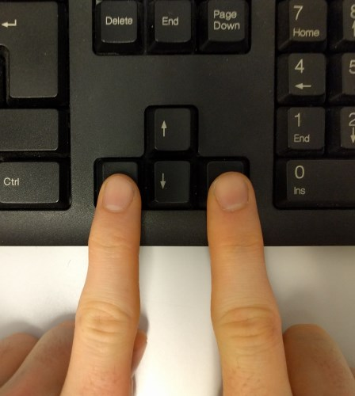

Good! Now we will inverse the answers compared to what you did earlier
| Press the left
arrow key with your left index finger if the day is in the . |
 | Press the right
arrow key with your left index finger if the day is in the . |
All the rest stays the same.
Please answer as fast as you can, while still answering correctly
Please press the right
arrow key to start the second run.